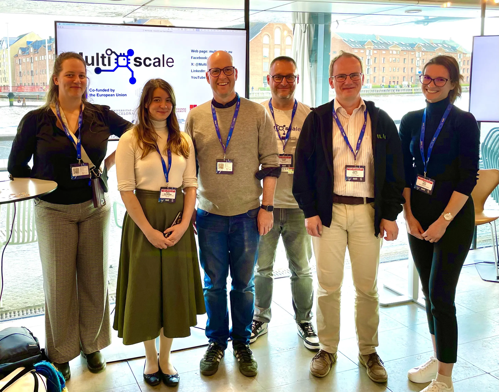
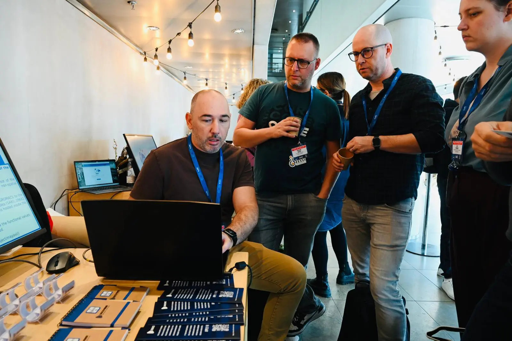

The HPC software landscape offers powerful tools for managing scientific software, such as EasyBuild and Spack.
EESSI provides a ready-to-use software stack with thousands of optimized software installations that were built with EasyBuild.
Imagine you are working on an HPC system with EESSI already available. You have access to a wealth of optimized installations for scientific software packages, libraries, tools, as well as compilers. But you need to install a new tool or a specific version of a package that's not in EESSI yet.
You can already extend EESSI with new software through the EESSI-extend module.
This utility provides you with a pre-configured EasyBuild installation that you can use to build packages from easyconfig files.
Like EasyBuild, Spack is a flexible build tool that also offers a vast repository of build recipes maintained by a large and active community, making it a familiar tool for many HPC users.
By enabling Spack to leverage software installations already available in EESSI as dependencies, we can offer users the best of both worlds: the convenience of a pre-built, optimized software stack combined with the flexibility to quickly build new packages using tools they already know.
This year's FOSDEM exceeded all expectations a first-time attendee like me could have. Filled with interesting talks, wide range of diverse people and impactful projects, I bring back home a bag full of stickers, lovely memories and some Belgian chocolates.
Bringing EESSI and EMBL's computational community closer together during EMBL's CoDash hackathon.
Simultaneously working towards bringing a large repository of scientific software in-use at EMBL's HPC cluster to EESSI.
EESSI provides a rich set of software installations, which were built and installed using
EasyBuild.
Can we convince Spack to reuse software installed in EESSI,
and by doing so make EESSI more attractive to those of you who prefer using Spack over EasyBuild?
Several people have expressed interest in exposing the software installations provided by EESSI
to Spack, so they can be used as dependencies when building and installing software with Spack.
Recently, we have explored how this could be achieved through a proof-of-concept with QuantumESPRESSO.
The goal here is to build and install only QuantumESPRESSO with Spack,
and leveraging software installations from EESSI for all required dependencies, including the compiler and libraries for MPI, BLAS/LAPACK, FFTW, etc.
Kubernetes, also known as K8s, is an open-source container orchestration platform widely used for automating the deployment, scaling, and management of containerized applications.
Normally, deploying a specific application on Kubernetes requires preparing a container image including the target software and all its dependencies.
Furthermore, the software should be optimized depending on the target hardware architecture to achieve the best performance, which could prove particularly challenging especially on heterogeneous systems.
Implementing an integration of EESSI with Kubernetes will allow the many sites and enterprises that already use K8s to more easily get access to a wide variety of optimized software installations.
In this blog post, we present a proof of concept (PoC) for deploying EESSI on a Kubernetes cluster.
In a previous blog post, “An example CI workflow that leverages EESSI CI tools”,
Pedro Santos Neves explained how to set up a GitLab CI workflow.
This post will focus on GitHub CI workflows and show how to access the development repository of EESSI.
High-performance computing environments are constantly evolving, and keeping pace with the latest interconnect technologies is crucial for maximising application performance. However, we cannot rebuild all the software in EESSI that depends on improvements to communication libraries. So how do we take advantage of new technological developments?
Specifically we look at taking benefit of the HPE/Cray Slingshot-11.
Slingshot-11 promises to offer a significant advancement in HPC networking, offering improved bandwidth, lower latency, and better scalability for exascale computing workloads ... so
this should be worth the effort!
In this blog post, we present the requirements for building OpenMPI 5.x with Slingshot-11 support on HPE/Cray systems and its integration with EESSI using the host_injections
mechanism of EESSI to inject custom-built OpenMPI libraries. This approach enables overriding EESSI’s default MPI library with an ABI-compatible, Slingshot-optimized version which should give us optimal performance.
EESSI has recently been working together with the European Open Science Cloud (EOSC) to provide easy access to EESSI for those using EOSC compute resources.
The plenary sessions of the EuroHPC User Days 2025 featured representatives of both the
EuroHPC Joint Undertaking (JU)
and the EuroHPC community talking about current and upcoming activities.
Recordings of the plenary sessions are available: day 1, day 2.
Anders Dam Jensen (CEO of EuroHPC JU) at the opening plenary
The EuroHPC Federation Platform (EFP) was highlighted during the presentation
on the EuroHPC supercomputer infrastructure:
The first version of the EuroHPC Federation Platform will be available in March 2026,
and will include EESSI as the base for the Federated Software Catalogue (FSC) component.
The networking sessions were of particular interest to us,
since they allowed us to discuss EESSI and related topics with a various people from the EuroHPC Community.
Somewhat unexpectedly a stand was available during the Meet & Greet networking session
for EuroHPC Centre-of-Excellence (CoE) projects.
We took the opportunity as representatives of the MultiXscale
to set up an improved info stand, where we also did live hands-on demos with EESSI.

Group picture in front of MultiXscale info stand
During the networking sessions we engaged with various EuroHPC Hosting Entities,
either about their experience with making EESSI available on the EuroHPC supercomputers they operate,
or about their ongoing efforts to make EESSI available soon.

Discussion on making EESSI available on Discoverer
Initially we were a bit unsure whether or not this would attract enough interest,
but in the end we filled all available seats for in-person attendees,
and also had a bunch of remote attendees who followed via Zoom.
The hackathon started with a presentation by Alan O'Cais outlining how EESSI can be leveraged for
Continunous Integration (CI) and Continuous Deployment (CD).
Hackathon participants paying attention during the presentation
During the hands-on session participants could "pick their own adventure",
and decide for themselves whether they wanted to explore using EESSI in GitHub Actions
or take up another challenge. Several members of the EESSI core team were available to
answer questions and provide hands-on help to hackathon participants.
Hackathon participants during hands-on session
All in-person attendees received a free EESSI coffee mug as a token of appreciation
for their participation in the hackathon.
The hackathon featured a Raspberry Pi starter kit prize,
sponsored by Do IT Now,
which was granted to the participant who made the most impressive progress during the hackathon.
Nitin Shukla (CINECA) won the Raspberry Pi Start Kit prize
More information on the EESSI CI/CD hackathon that was held in conjunction with the EuroHPC User Days 2025
is available here.
We hope to organise more sessions like this in the future!
Following our previous posts on mapping the ROCm ecosystem and building ROCm support in EESSI, we're excited to share a significant milestone in our ROCm integration journey.
Our core ROCm components are now hardware-validated and nearly ready for inclusion in EasyBuild, marking substantial progress toward making AMD GPU computing more accessible through EESSI.